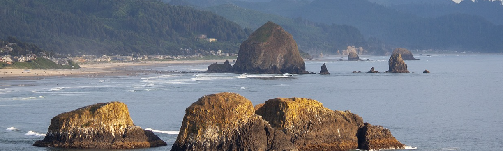
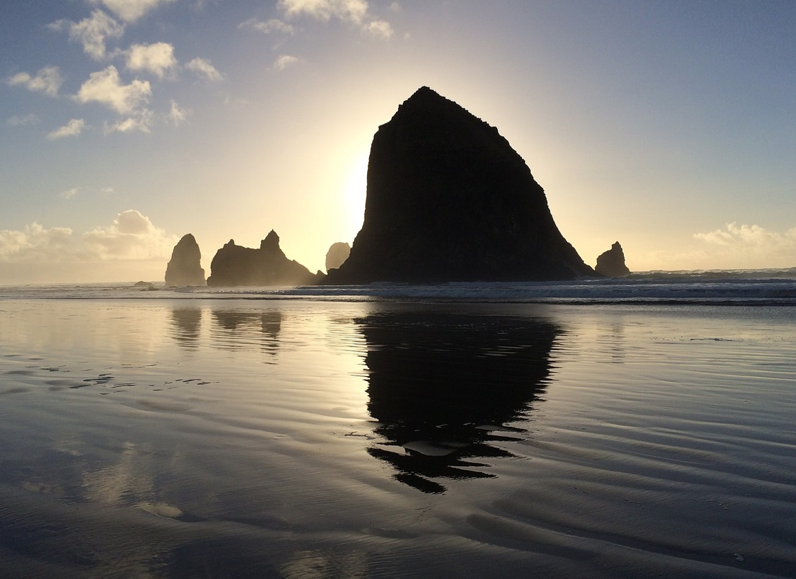
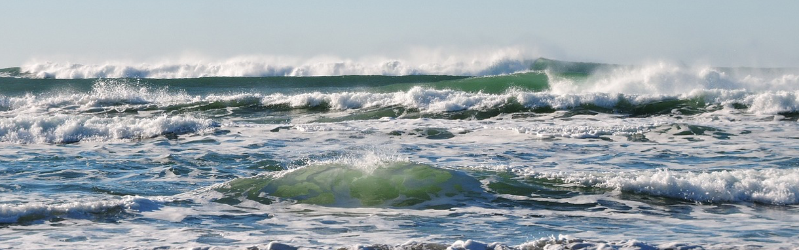
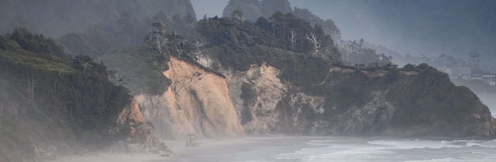

The Oregon Coast


The state of Oregon boarders the Pacific Ocean. Its coastline stretches for roughly 363 miles and is made of rugged shorelines, lighthouses, and sleepy beachtowns. While many movies have been filmed along the Oregon coast, one of the most influential was the Goonies.

filmed in Astoria Oregon overlooking Cape Disapointment. The Goonies features prime footage of the northern Oregon coast.
